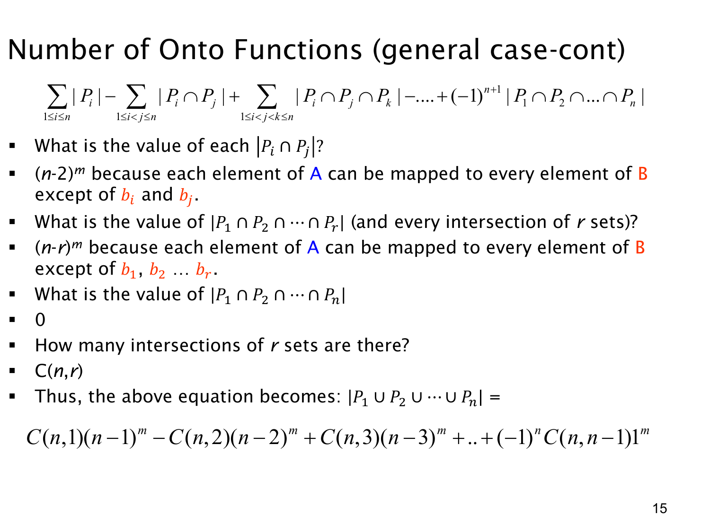

L1.8 · 第 14 页讲解原文
查看这一页课件

满射容斥中的交集为什么是 (n−r) 的 m 次方？
Pi 表示“不使用输出值 bi”的函数集合。因此，一个函数属于 Pi∩Pj，就不能把任何输入映射到 bi 或 bj。
还剩 n−2 个可用输出，m 个输入各自独立选择，所以
∣Pi∩Pj∣=(n−2)m.
推广到 r 个不同的坏集合：
∣Pi1∩⋯∩Pir∣=(n−r)m.
这里不需要知道被禁用输出的具体名字，只需知道有多少个被禁用。正是这种对称性，让同一层的交集大小完全相同。
一共有 n 个坏集合，从中选择 r 个有 (rn) 种，所以容斥的第 r 层合计为
(rn)(n−r)m.
当全部 n 个输出都被禁用时，因为 m≥n≥1，定义域非空，任何函数都无法存在，交集大小为 0m=0。
于是非满射的数量是
i=1⋃nPi=r=1∑n(−1)r+1(rn)(n−r)m.
最后一项为零时，可以省略，像课件那样写到 r=n−1，其符号为 (−1)n，而 1m=1。
这一页计算的是非满射，因此第一层是正号。若要得到满射数，还要用 nm 减去整个交替和：
满射数=r=0∑n(−1)r(rn)(n−r)m.
把 r=0 也写进求和很方便：它就是 (0n)nm=nm，代表所有函数。此后依次排除、补回重复排除的坏函数。